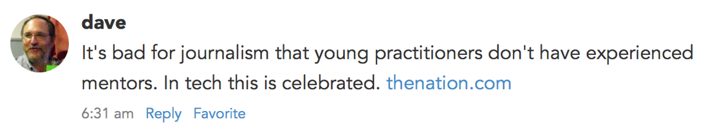

In my posts about defining what makes a microblog post and guidelines for RSS, I talked a little about links but didn’t explore linkblogging. While many blog authors post primarily long essays, shorter link blogs are a common approach for bloggers who want to post new content several times a day.
Essentially two types of link blogs have evolved since the early days of blogging. The most traditional link blog can be seen in Dave Winer’s posts (click on the Links tab). These are links with a very short commentary. Many tweets are like this. In a way, this format is the purest form of microblogging.
The second type of link blog starts to fall outside the limits of microblogging. Instead of just including a URL, authors use a quote from the linked material as the foundation for the post. The majority of Daring Fireball posts adopt this format. While John Gruber is known for his full essays, those longer posts are infrequent today. He keeps his site active by linking to other interesting essays and tacking on his own brief opinion.
Daring Fireball has become so successful that Gruber’s approach to linkblogging has been copied by many other sites. MacStories, Six Colors, One Foot Tsunami, John Moltz’s Very Nice Web Site, and Marco Arment’s blog are just a handful that follow this pattern. All of these sites post the occasional essay, but most blog posts link away to an external site in the RSS item, not back to their own site.
At a technical level, this difference can best be seen in the RSS feed’s <link> and <guid> elements. These elements will contain URLs that either link back to the main site, or link away to an external site.
Here is where this evolving approach to link blogs starts to break down. Let’s take an example from Six Colors, one of my favorite sites. (I recommend subscribing. The members-only secret podcast with Jason and Dan Moren is really fun, and the email magazine is great too.)
In a link post about Hulu’s pricing, Jason Snell actually writes 4 paragraphs of commentary (plus a footnote). This is more like an essay than a short link post that points to the external site.
Another example is when MacStories linked to Twitter’s launch of Moments. A few paragraphs of quoted text, 5 paragraphs of MacStories commentary. The commentary is as important or even more important to read than whatever Federico is linking to.
Sometimes we read sites like MacStories, Six Colors, or Daring Fireball more for the commentary than for what is being linked to. But when using an RSS reader, there is too much confusion about where an item’s link goes when clicked if the site’s feed isn’t consistent about linking everything back to its own site.
And in fact Jason Snell acknowledges this problem by offering two separate RSS feeds: the default one, with a mix of links back to Six Colors for essays and pointed elsewhere for link posts; and another feed with everything linking back to Six Colors, where the commentary lives. He also attempts to minimize confusion on his own site by giving each type of post its own icon in the site design.
The less clear-cut the distinction between essays and link posts, the more confusion we introduce to readers. In some ways, this mixed approach really only works for Daring Fireball, because his feature essays are so long, and so obviously different in format to the rest of the link posts.
Good conventions for blogging have been at a standstill for years. While part of the appeal of indie blogging is there’s no one “right” way to do it, and authors can have a strong voice and design that isn’t controlled by a platform vendor, we must accept that Twitter has taken off because it has a great user experience compared to blogs. It‚Äôs effortless to tweet and the timeline is consistent. For blogging to improve and thrive, it should have just as straightforward a user experience as social networks wherever possible.
Luckily, RSS already has everything we need for clients to visually distinguish between link posts and regular ones. If the <link> element points to a domain other than the one for the site, it’s probably a link post. If the <link> and site domain match, it’s a full post.
I’ve adopted this in my new microblogging platform by exposing the domain in the UI itself, at the end of the title or microblog post whenever it’s a link post. If it’s a full post, the link isn’t added. And for either type of post, the timestamp links back to whatever was in the <link>.
Here’s a screenshot from one of Dave’s posts. Note that the link was not in the RSS text. It was added by my app automatically:

This has been a long post, but it boils down to two simple recommendations:
- If you’re a blog author and you’re adding any significant commentary, the RSS feed should point back to your site.
- If you’re an RSS client developer, the difference between link posts and full posts should be exposed in the UI.
I believe that adopting these will bring more consistency to blogging. Users won’t need to hover over links, or guess what will happen on a click or tap. It’s a small change that will make reading blogs a little better.